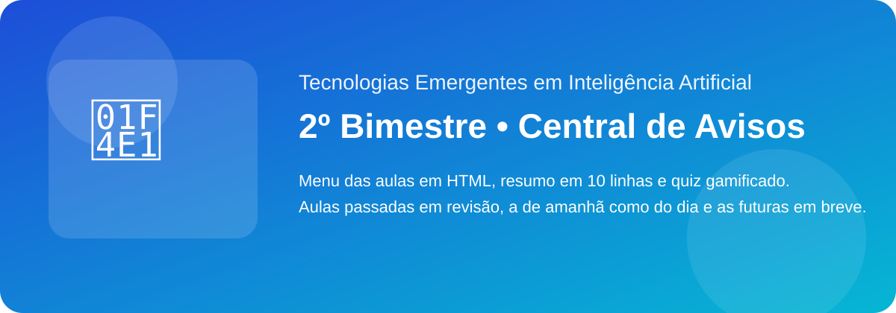

👁️ Aula 1 — Introdução à visão computacional e leitura de imagens
Data: 12/05/2026
Bloco: Visão Computacional
Abrir aula
Esta trilha apresenta tecnologias emergentes em Inteligência Artificial com foco em aplicações reais e linguagem acessível. No 2º bimestre, a turma percorre seis blocos: visão computacional, Internet das Coisas e IA, robótica e IA, computação quântica, blockchain e IA e ferramentas de IA para usuários comuns. Tudo é integrado ao projeto Central de Avisos, que organiza provas, horários, prazos e comunicados da escola.
4 aulas por semana • 50 minutos
12/05/2026 a 19/06/2026
Resumo no caderno, microproduto individual e quiz para revisão.
Central de Avisos: provas, horários, prazos e comunicados.
Data: 12/05/2026
Bloco: Visão Computacional
Abrir aulaData: 15/05/2026
Bloco: Visão Computacional
Abrir aulaData: 18/05/2026
Bloco: Visão Computacional
Abrir aulaData: 19/05/2026
Bloco: Visão Computacional
Abrir aulaData: 20/05/2026
Bloco: IoT e IA
Abrir aulaData: 22/05/2026
Bloco: IoT e IA
Abrir aulaData: 25/05/2026
Bloco: IoT e IA
Abrir aulaData: 26/05/2026
Bloco: IoT e IA
🔒 Em breveData: 27/05/2026
Bloco: Robótica e IA
🔒 Em breveData: 29/05/2026
Bloco: Robótica e IA
🔒 Em breveData: 01/06/2026
Bloco: Robótica e IA
🔒 Em breveData: 02/06/2026
Bloco: Robótica e IA
🔒 Em breveData: 03/06/2026
Bloco: Computação Quântica
🔒 Em breveData: 05/06/2026
Bloco: Computação Quântica
🔒 Em breveData: 08/06/2026
Bloco: Computação Quântica
🔒 Em breveData: 09/06/2026
Bloco: Blockchain e IA
🔒 Em breveData: 10/06/2026
Bloco: Blockchain e IA
🔒 Em breveData: 12/06/2026
Bloco: Blockchain e IA
🔒 Em breveData: 15/06/2026
Bloco: Ferramentas para Usuários Comuns
🔒 Em breveData: 16/06/2026
Bloco: Ferramentas para Usuários Comuns
🔒 Em breveData: 17/06/2026
Bloco: Ferramentas para Usuários Comuns
🔒 Em breveData: 19/06/2026
Bloco: Fechamento
🔒 Em breve